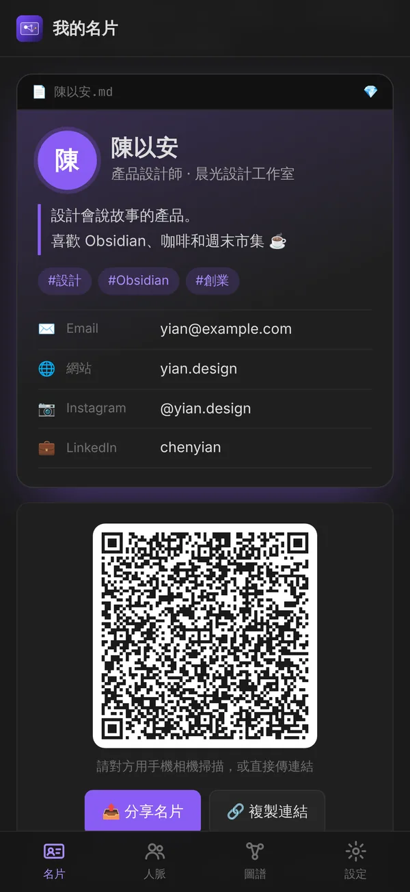
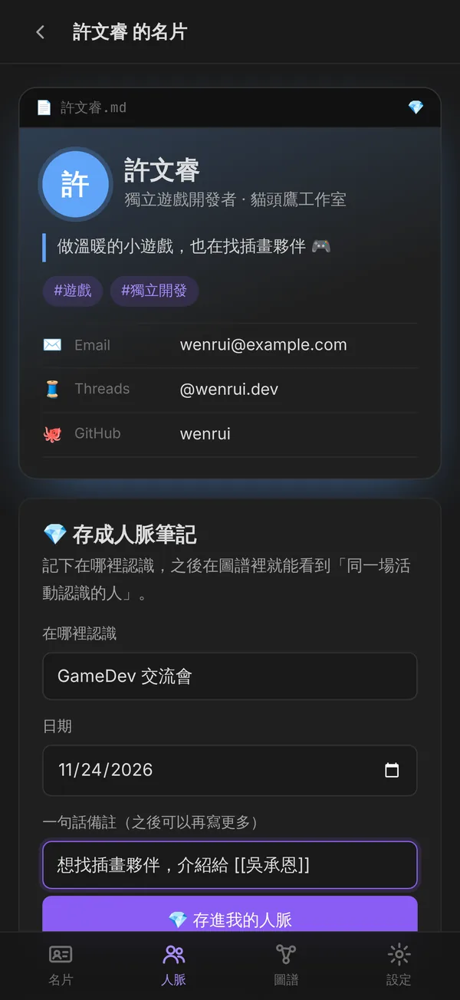
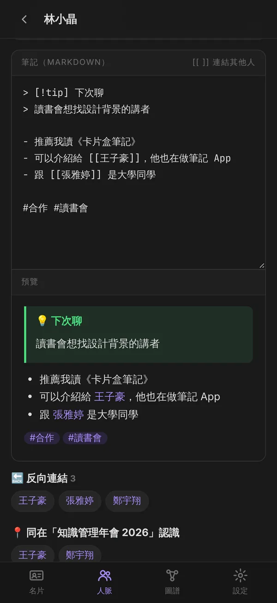
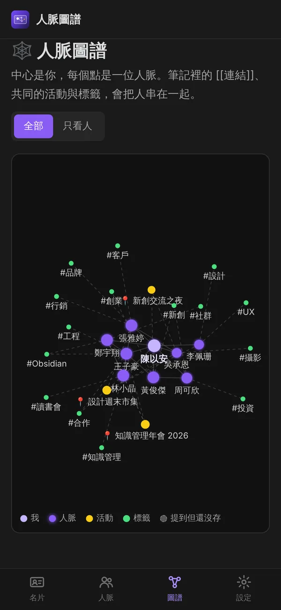

交換名片，
把人脈存成筆記。
名片一多，就忘了誰是誰？VaultCard 讓你掃一下 QR 就交換名片，把每個認識的人存成一則 Markdown 筆記：記下在哪裡認識、聊了什麼，用 [[連結]] 把人串起來，在圖譜裡看見你的人脈網路。
- 不用註冊
- 掃 QR 就交換
- 免費、無廣告
- 資料只在你手機上




名片、筆記、圖譜，一次到位
喜歡做筆記的人，也該用筆記的方式經營人脈。
30 秒做好名片
名字、職稱、自介、標籤，加上電話、Email、LINE、IG、Threads、LinkedIn、GitHub，即時預覽、自動產生 QR Code。
掃一下就交換
對方用手機相機掃 QR 就能看到你的名片，不用裝 App。存進人脈後一鍵回傳他的名片。
每個人都是一則筆記
記下在哪裡、哪天認識，寫下聊了什麼。支援 Markdown、#標籤、Callout。
雙向連結與反向連結
在筆記裡寫 [[名字]] 把人串起來，看誰提到了誰、誰是同一場活動認識的。
人脈圖譜
以你為中心，人脈、活動、標籤連成一張可拖曳、縮放的網路圖，誰是關鍵人物一眼就懂。
匯出成 Vault
一鍵下載 .zip：每個人一則 .md 筆記（含屬性），直接用 Obsidian 等 Markdown 筆記軟體開啟。
三步驟，人脈自己長出來
做一張名片
填好資料，App 自動產生你的 QR Code 和分享連結。
掃 QR 交換
記下在哪裡認識，存成人脈筆記，再回傳你的名片。
看見人脈網路
寫筆記、加連結，圖譜會慢慢長成你的人際地圖。
常見問題
要付費或註冊嗎？
不用。VaultCard 完全免費、沒有廣告，也不需要註冊帳號，打開就能用。
我的資料存在哪裡？安全嗎？
VaultCard 沒有伺服器。你的名片和人脈筆記只存在你自己的手機或瀏覽器裡，我們看不到也不會蒐集。分享名片時，名片內容是直接放在連結裡傳給對方的，所以只要填你願意公開的資訊就好。
對方沒有裝 VaultCard 也能交換嗎？
可以。對方用手機相機掃你的 QR Code，會在瀏覽器打開你的名片，可以存進通訊錄（vCard），也可以直接用網頁版建立自己的名片回傳給你。
一定要會用 Obsidian 嗎？
不用。VaultCard 本身就能寫筆記、看圖譜。如果你有在用 Obsidian 或其他 Markdown 筆記軟體，可以把整個人脈匯出成 .zip，直接放進你的筆記庫。
換手機時資料會不見嗎？
資料只存在裝置上，換手機前請到 App 的「設定與資料」下載備份檔，在新手機用「還原備份」匯入即可。
有網頁版和 App 嗎？
都有。網頁版現在就能用（右上角「開啟 App」），iPhone 版可以在 App Store 免費下載。